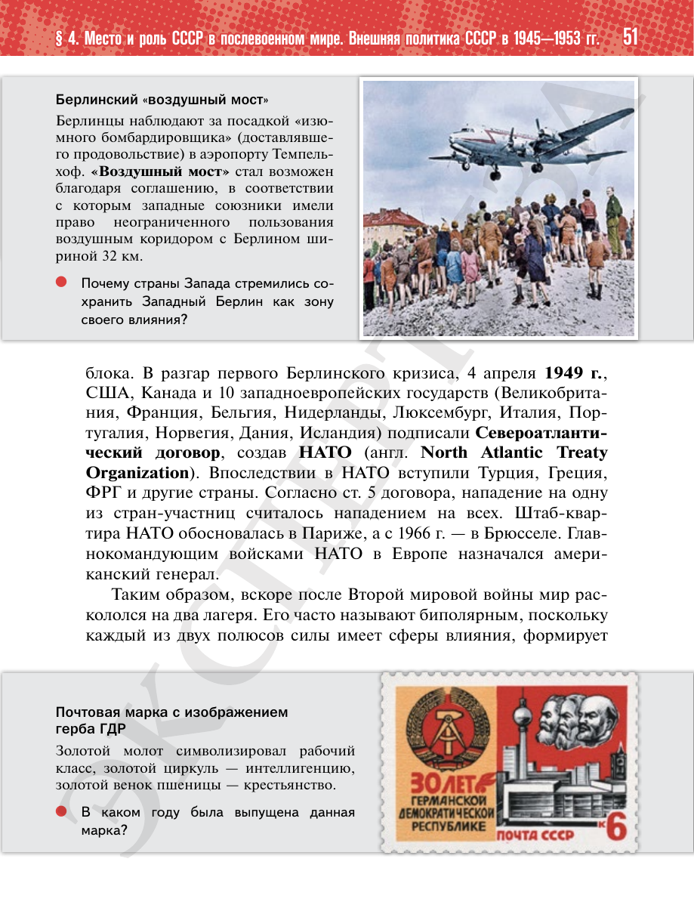

⌂
Мединский.нет
Последнее обновление: 21.08.2026
Мединский.нет
›
История России. 11 класс. Базовый уровень
›
Глава I. СССР в 1945—1991 гг.
›
§ 4. Место и роль СССР в послевоенном мире. Внешняя политика СССР в 1945—1953 гг.
›
стр. 52

← стр. 51
Оглавление
стр. 53 →
×